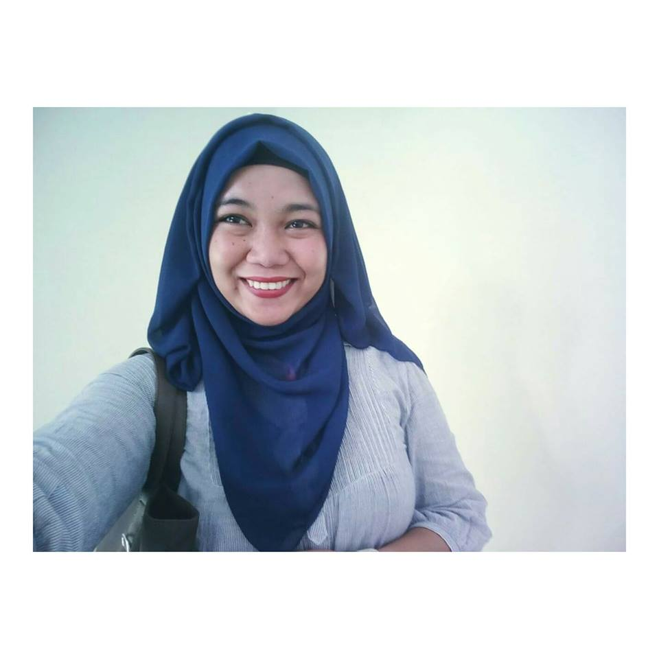

JALALEAH A. LIDASAN
Gang, Sultan Kudarat, Maguindanao
Cotabato City
lidasanjhal@yahoo.com
09973783264

OBJECTIVE
To be a good individual and citizen to my country and to motivate my future students on how to achieve the goal in life
and to work better of what really the position I meant.
PERSONAL DATA
Date of Birth: September 21, 1993
Place of Birth: Matanog, Parang Maguindanao
Age: 24
Sex: Female
Civil Status: Married
Citizenship: Filipino
Religion: Islam
EDUCATION
Collegiate: Bachelor in Elementary Education
Notre Dame RVM College of Cotabato
#74 Sinsuat Avenue, Cotabato City
Year 2017-2018
Secondary: Notre Dame RVM College Cotabato
#74 Sinsuat Avenue, Cotabato City
Year 2010-2011
Elementary: Nahda Central Academy
Campu Muslim, Cotabato City
Year 2005-2006
AFFILIATION
Position: Member (2016-2018)
Position: Member (2016-2018)